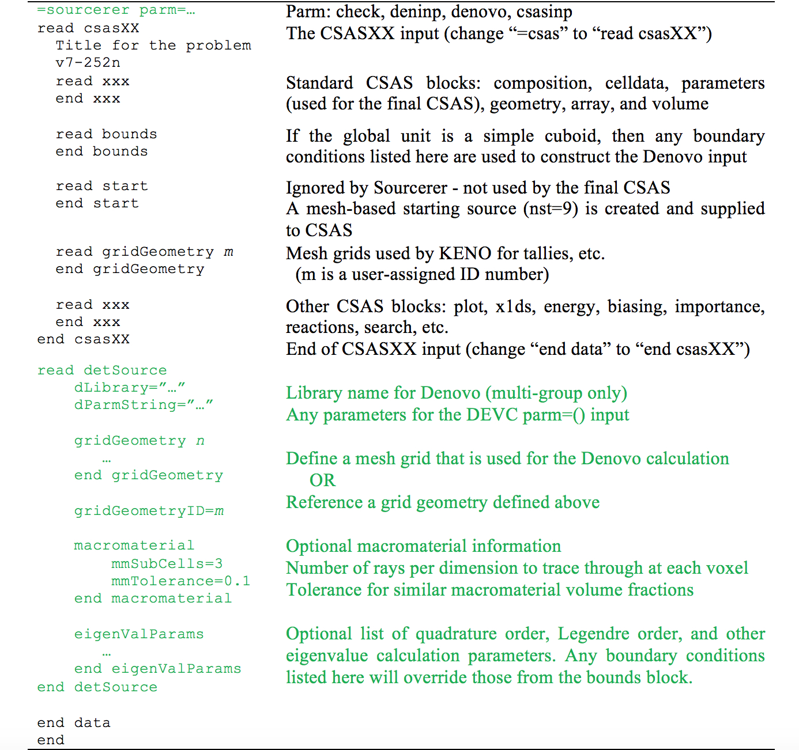

Sourcerer: Deterministic Starting Source for Criticality Calculations¶
D. E. Peplow, A. M. Ibrahim, K. B. Bekar, C. Celik, and B. T. Rearden
The Sourcerer sequence in SCALE deterministically computes a fission distribution and uses it as the starting source in a Monte Carlo eigenvalue criticality calculation. Using a reasonably accurate starting source, developed from the Denovo discrete-ordinates code through the DEVC sequence, Sourcerer improves the KENO/CSAS Monte Carlo calculation in two ways. First, the number of skipped generations required to converge the fission source distribution in the KENO solution is reduced. Second, for problems with loosely coupled fissionable areas, the reliability of the final eigenvalue (\(k_{\mathrm{\text{eff}}}\)) is increased. Several convergence diagnostic capabilities available in the KENO codes help the user better measure when the fission source actually convergences.
Introduction¶
Monte Carlo eigenvalue calculations have been used in evaluating critical and sub-critical systems for decades. Calculations are typically done iteratively – starting with a set of fission neutrons, transporting them through the geometry until they leak or are absorbed, and then tabulating the fission sites for the next iteration. Each iteration corresponds to a generation in a chain reaction, and the eigenvalue, \(k_{\mathrm{\text{eff}}}\), is the ratio of the number of fissions in one generation to the number in the previous generation. Once the fission source distribution (the eigenfunction) has converged, many generations are simulated to obtain more estimates of \(k_{\mathrm{\text{eff}}}\) with lower statistical uncertainty.
Two common questions that concern practitioners are (1) how many generations (skipped generations) are required before the fission source distribution is sufficiently converged that generational estimates of \(k_{\mathrm{\text{eff}}}\) can be included in the final average of the eigenvalue (the active generations) and (2) has the fission source converged to the correct distribution, such that the final value of the eigenvalue will be correct? For most calculations, the final value of the \(k_{\mathrm{\text{eff}}}\) eigenvalue is all that matters, so the convergence of the generational value of \(k_{\mathrm{\text{eff}}}\) is used to determine the number of skipped generations. Fluxes and reaction rates computed during the active generations are more sensitive to the entire fission distribution and should only be accumulated when the fission distribution is sufficiently converged – which is not necessarily as soon as the generational value of \(k_{\mathrm{\text{eff}}}\) has converged. To address this concern, tools such as Shannon entropy [Sha48] can be used to measure the convergence of the fission source distribution eigenfunction [UB03][UB05].
For the second question, the reliability in the final \(k_{\mathrm{\text{eff}}}\) eigenvalue depends on whether the fission source converges to the correct distribution. Because no tool currently exists in SCALE to verify that the fission distribution is correct, models are often run for many generations using many histories per generation to ensure that the result does not change. Another approach to verify eigenvalue accuracy is to run several clones of the same problem, but each starting with different random numbers seed, and ensure that they all predict the same value for \(k_{\mathrm{\text{eff}}}\). Addressing this concern relies heavily on the engineering judgment of the practitioner.
Initial studies [IPW+11] have shown that the use of a starting fission distribution that is similar to the true fission distribution can both reduce the number of skipped generations required for fission source convergence and significantly improve the reliability of the final \(k_{\mathrm{\text{eff}}}\) result. A recent study [Ibr13] focusing on criticality calculations of a spent nuclear fuel cask showed that the chance of a low eigenvalue result due to undersampling from an unconverged source was dramatically reduced when using a deterministic starting source. In that study, a cask holding 24 assemblies was examined using a uniform starting source, a deterministic starting source with loose convergence criteria, and a deterministic starting source with tight convergence criteria. Multiple clones of KENO were run (with different random number seeds) for different values of skipped cycles. The number of clones that gave an incorrect result for \(k_{\mathrm{\text{eff}}}\) was then tabulated. The results from that study, presented in Figure 2.4.1, show that using a deterministic starting source significantly increases the \(k_{\mathrm{\text{eff}}}\) reliability.
The Sourcerer sequence in SCALE uses the solution from the Denovo [ESSC10] discrete-ordinates code (through the DEVC sequence) as that starting fission source distribution in a CSAS/KENO Monte Carlo [GPJD+11] calculation. For challenging criticality safety analyses, such as as-loaded spent nuclear fuel transportation packages with a mixed loading of low- and high-burnup fuel, even a low-fidelity deterministic solution for the fission source should be more accurate than the typical starting guesses of uniform or cosine shape over the fissionable regions. The Sourcerer sequence is fairly automated and uses an input very similar to standard CSAS (KENO V.a or KENO-VI) inputs, along with a short description of the mesh and other parameters for the Denovo calculation.
{kind=link}
Capabilities¶
The Sourcerer sequence calls a series of other sequences and utilities in SCALE – most importantly DEVC (for Denovo) and one of the CSAS sequences. Because DEVC can only use KENO-VI geometry, the utility c5toc6 geometry converter is used for KENO V.a geometries. The utility dso2msl is used to convert the Denovo spatial output (*.dso file) into a mesh source lite (*.msl) file that can be read as a starting source in KENO. All of the steps in Sourcerer are described in Table 134.
The sequence can be terminated at several points throughout the
calculation using the “parm=” control on the “=sourcerer” line that
starts the sequence. This capability can be used to stop the sequence
between steps to ensure that the problem is progressing correctly or
used to make a single source distribution that can be used with many
variants of the final CSAS problem. Also when running several versions
of a problem, if a file that is normally created by the Sourcerer
sequence is supplied, then that step will be skipped, thus saving time.
Note that files that use the name of the input file (input.inp) will
be copied back to the user’s working directory automatically when the
sequence finishes. Files that do not use the input file name can be
copied back to the user’s working area with an extra “=shell” directive
in the *input*.inp input file.
The Sourcerer sequence can be used with KENO V.a or KENO-VI geometries. Either multi-group (MG) or continuous energy cross-section libraries can be used for the final CSAS calculation. Denovo only uses multi-group libraries, and self-shielding can be done like any MG sequence in SCALE. For efficient calculations, the user should understand the basics of Denovo eigenvalue calculations, how to use macromaterials, and how to use the KENO convergence metrics.
Step |
Module/Task |
Creates file |
To stop after |
|---|---|---|---|
0 |
Check user input |
|
|
1 |
|
|
|
2a |
Create Denovo input and AMPX cross sections |
|
|
2b |
|
input.dso |
|
3 |
|
|
|
4a |
Create the CSAS input |
|
|
4b |
|
Using DEVC/Denovo¶
Some discussion is required about the extent and level of detail needed in the grid geometry that will be used in the Denovo calculation and the mesh-based starting source. When using discrete-ordinates transport (S:sub:N) methods alone for solving radiation transport problems, a good rule of thumb is to use mesh cell sizes on the order of a mean-free path of the particle. For complex problems, this could lead to an extremely large number of mesh cells, especially when considering the size of the mean-free path of the lowest energy neutrons.
In Sourcerer, the goal is to use the SN calculation for a quick estimate. Accuracy is not paramount—just getting an approximation of the overall shape of the true fission source distribution will benefit the CSAS Monte Carlo calculation. With a more accurate starting source, fewer skipped generations may be required. At some point there is a time trade-off where calculating the starting source guess requires more time than the saved skipped generations would have used. Large numbers of mesh cells, as a result of using very small mesh sizes, for SN calculations also use a great deal of computer memory.
Because the SN calculation is only used to establish the initial distribution of source neutrons, the runtime and memory requirements for Sourcerer can be reduced by using larger/coarser mesh cell sizes than is typical for a stand-alone SN analysis. Some general guidelines to consider when creating a mesh for the Denovo eigenvalue calculation/mesh-based starting source are as follows.
All fissionable areas of the geometry and areas where neutrons can reasonably affect the eigenvalue should be included in the mesh.
More detail should be used in the fissionable areas.
Mesh planes should be placed at significant material boundaries.
Neighboring cell mesh sizes should not be drastically different.
Convergence Metrics in KENO¶
KENO provides several tools that can be used to examine the convergence of \(k_{\mathrm{\text{eff}}}\) and the fission source distribution. These include tools based on Shannon Entropy1,3 and tools based on the mesh tally metrics described in [KS11]. Running Sourcerer should accelerate Shannon Entropy convergence for KENO calculations, and Sourcerer/KENO users should always check that the calculation Shannon Entropy has converged before active generations begin.
Sequence Input¶
The input file for a Sourcerer calculation is similar to a CSAS input, as shown in Table 135. There are two major differences between Sourcerer and CSAS: the beginning/end syntax of the CSAS input and the presence of the “read detSource” block for specifying the deterministic starting source. The CSAS input appears as one block in the Sourcerer sequence – instead of “=csasXX” use “read csasXX” and instead of “end data” use “end csasXX”. If any parm= parameters are required for the CSAS sequence, they can be listed as “read csasX parm=(…)”. Because Sourcerer runs both the DEVC and CSAS sequences, which will most likely use different cross-section data libraries (coarse group for SN and fine group or continuous energy for Monte Carlo), the library for DEVC is listed in the new “read detSource” block, along with other parameters used by the Sourcerer sequence.
One important note about the geometry in Sourcerer is that for KENO V.a geometries, an outer boundary region should be added for an accurate internal conversion to a KENO-VI geometry prior to ray tracing. Also note that when using CSAS methods with the search capability, the Denovo mesh must encompass any changes to the size of the geometry.
Parameters used for building the deterministic starting source and
establishing the CSAS sequence are specified in the detSource block. The
library name for the Denovo calculation and the grid for the Denovo
calculations are required. Many optional parameters are available for
controlling the Denovo solver and applying boundary conditions (in the
eigenValParams sub-block). The grid geometry is defined in a sub-block,
or the keyword “gridGeometryID= n” can be used to point to a grid
geometry defined in its own input block. The use of macromaterials to
construct a more representative mesh model from the Monte Carlo geometry
is controlled with the “mmSubCell=” and “mmTolerance=” parameters in the
macromaterial sub-block.
The overall layout of the detSource block is shown in Table 136. The more common keywords for the eigenValParams sub-block are shown in Table 137 and Table 138. A full list of the Denovo parameters appears in Appendix A. Macromaterials are explained in detail in the DEVC manual, and a list of keywords is given in Table 139.
|  |
Sequence Output¶
In addition to the data contained in the main Sourcerer text output file, many other files are created containing the intermediate data used by the sequence. These files are listed in Table 140. Some of the files produced can be viewed using the Java Mesh File Viewer, which is distributed with SCALE.
Note that files that use the name of the input file (input.inp) will
be copied back to the user’s working directory automatically when the
sequence finishes. Files that do not use the input file name can be
copied back to the user’s working area with an extra “=shell” directive
in the input.inp input file.
Instructions on how to use the Java Mesh File Viewer to view the various output files listed in Table 140 as well as how to use the macromaterial table file are located in the DEVC manual and the Mesh File Viewer help file, which is accessible through the Help/Help menu.
Filename |
Viewer |
Description |
|
|---|---|---|---|
Output Summary |
|||
input.out |
main text output file, contains results summary |
||
input.msg |
messages file |
||
Geometry Conversion |
|||
i_c5toc6 |
input file for c5toc6 module |
||
input.geom000 ….inp |
KENO-VI version of a KENO V.a geometry, if applicable |
||
Denovo |
|||
i_devc |
input file for DEVC sequence |
||
xkba_b.inp |
Va |
input file for Denovo – if this file is renamed to have a *.dsi extension (Denovo simple input), it is viewable in the Mesh File Viewer |
|
ft02f001 |
AMPX formatted cross sections for Denovo |
||
input.dso |
V |
Denovo fission source distribution |
|
input.mmt |
V |
macromaterial table, use with *.dso or *.dsi file |
|
Mesh Source Conversion |
|||
i_util |
input file for dso2msl utility |
||
input.msl |
V |
mesh source lite file, the starting source distribution |
|
CSAS |
|||
i_csasXX |
input file for the final CSASXX sequence |
||
input.fission Source.3dmap |
V |
mesh tally of fission source distribution from KENO |
|
input.kenoNuB ar.txt |
text file containing value of nu-bar |
||
aV – can be displayed with the Mesh File Viewer. |
Sample problems¶
In addition to the sample problems described in this section (with input files included with SCALE), the reader is referred to the paper by Ibrahim et al. for a detailed study using a real used nuclear fuel transport and storage canister containing assemblies with a range of initial enrichments and burnups.
Jezebel¶
Consider the Jezebel critical assembly [PU-MET-FAST-001 in Volume I of the International Handbook of Evaluated Criticality Safety Benchmark Experiments, NEA/NSC/DOC(95)03, Organisation for Economic Co-operation and Development, Nuclear Energy Agency (OECD-NEA), September 2012]. This is a very simple problem (a single sphere) to solve with CSAS and can be useful as a way to demonstrate the Sourcerer sequence.
Input file¶
The standard CSAS inputs for Jezebel are shown below using both KENO V.a and KENO-VI geometries.
KENO V.a geometry |
KENO-VI geometry |
=csas5
Jezebel
v7-252n
read composition
pu-239 1 0 0.037047 end
pu-240 1 0 0.0017512 end
pu-241 1 0 0.00011674 end
ga 1 0 0.0013752 end
end composition
read parameters
gen=110 npg=1000 nsk=10
end parameters
read geometry
global unit 2
sphere 1 1 6.38493 .
end geometry
end data
end
|
=csas6
Jezebel
v7-252n
read composition
pu-239 1 0 0.037047 end
pu-240 1 0 0.0017512 end
pu-241 1 0 0.00011674 end
ga 1 0 0.0013752 end
end composition
read parameters
gen=110 npg=1000 nsk=10
end parameters
read geometry
global unit 2
sphere 51 6.38493
media 1 1 51 vol=1090.3277
boundary 51
end geometry
end data
end
|
The above inputs can be easily changed into the following Sourcerer inputs (with geometry additions in brackets and extra Sourcerer input in braces).
KENO V.a geometry |
KENO-VI geometry |
{=sourcerer}
{read} csas5
Jezebel
v7-252n
read composition
pu-239 1 0 0.037047 end
pu-240 1 0 0.0017512 end
pu-241 1 0 0.00011674 end
ga 1 0 0.0013752 end
end composition
read parameters
gen=110 npg=1000 nsk=10
end parameters
read geometry
global unit 2
sphere 1 1 6.38493
[cuboid 0 1 7.0 -7.0 7.0 -7.0 7.0 -7.0]
end geometry
{end csas5}
{read detSource}
{dLibrary="v7-27n19g"}
{gridGeometry 7}
{xLinear 14 -7.0 7.0}
{yLinear 14 -7.0 7.0}
{zLinear 14 -7.0 7.0}
{end gridGeometry}
{end detSource}
end data
end
|
{=sourcerer}
{read} csas6
Jezebel
v7-252n
read composition
pu-239 1 0 0.037047 end
pu-240 1 0 0.0017512 end
pu-241 1 0 0.00011674 end
ga 1 0 0.0013752 end
end composition
read parameters
gen=110 npg=1000 nsk=10
end parameters
read geometry
global unit 2
sphere 51 6.38493
media 1 1 51 vol=1090.3277
boundary 51
end geometry
{end csas6}
{read detSource}
{dLibrary="v7-27n19g"}
{gridGeometry 7}
{xLinear 14 -7.0 7.0}
{yLinear 14 -7.0 7.0}
{zLinear 14 -7.0 7.0}
{end gridGeometry}
{end detSource}
end data
end
|
With either of these variations of the Jezebel problem, the fission source distribution can be tallied by KENO and saved to a mesh tally (*.3dmap) file by adding the following to the input:
read parameters
…
cds=1
end parameters
read gridGeometry 1
title="Mesh for collecting fission source distribution"
xLinear 28 -7.0 7.0
yLinear 28 -7.0 7.0
zLinear 28 -7.0 7.0
end gridGeometry
Note that the mesh grid used for the KENO mesh tally can be different from the mesh grid used by Denovo to create a starting source in the Sourcerer sequence. Also note that more total histories (more particles per generation or more active generations) would be required to produce a KENO fission source tally with low relative uncertainties in every voxel.
Output file¶
The results for the standard CSAS calculations and the Sourcerer results are shown in Table 141 for calculations with the 252-energy-group and continuous-energy cross sections.
Sample Problem |
CSAS |
Sourcerer |
|
|---|---|---|---|
KENO V.a geometry, v7-252 |
1.0045 ± 0.0017 |
1.0054 ±0.0018 |
|
KENO-VI geometry, v7-252 |
0.9998 ± 0.0018 |
1.0007 ±0.0020 |
|
KENO V.a geometry, ce_v7 |
1.0058±0.0027 |
1.0026 ±0.0017 |
|
KENO-VI geometry, ce_v7 |
0.9990 ±0.0023 |
1.0041 ±0.0016 |
The Denovo fission source provides a reliable starting source that is
similar to the actual fission source distribution computed by KENO
(using npg=250000), as shown in Fig. 130.
{kind=link}
Other variations¶
To increase the Denovo calculation speed (but decrease the fidelity of
the fission source result), the discretization in angle (quadrature= or
polarsPerOct=/azimuthsPerOct=) can be coarsened and/or the tolerance
parameters can be loosened. To reduce the amount of memory required by
Denovo, the number of Legendre moments in the scattering cross-section
expansion can be reduced (legendre=). Using macromaterials can help
increase the fidelity of the Denovo calculation with only a small
increase in model setup time. Macromaterials do not impact the Denovo
run time. Denovo diagnostic messages can be turned on and will print to
the messages file.
Macromaterials (higher fidelity) |
Looser tolerances (faster Denovo) |
read detSource
…
macromaterial
mmSubCell=3
mmTolerance=0.001
end macromaterial
end detSource
|
read detSource
…
eigenValParams
…
tolerance=1.0e-2
kTolerance=1.0e-3
end eigenValParams
end detSource
|
Screen messages |
Higher fidelity (slower Denovo) |
read detSource
…
eigenValParams
…
diagnostics=1
output=1
diagnosticLevel=1
end eigenValParams
end detSource
|
read sequence
…
eigenValParams
…
quadType=2
polarsPerOct=4
azimuthsPerOct=4
legendre=3
end eigenValParams
end sequence
|
- ESSC10
Thomas M. Evans, Alissa S. Stafford, Rachel N. Slaybaugh, and Kevin T. Clarno. Denovo: A new three-dimensional parallel discrete ordinates code in SCALE. Nuclear technology, 171(2):171–200, 2010. Publisher: Taylor & Francis.
- GPJD+11
Sedat Goluoglu, Lester M. Petrie Jr, Michael E. Dunn, Daniel F. Hollenbach, and Bradley T. Rearden. Monte Carlo criticality methods and analysis capabilities in SCALE. Nuclear Technology, 174(2):214–235, 2011. Publisher: Taylor & Francis.
- Ibr13
Ahmad M. Ibrahim, Douglas E. Peplow, Kursat B. Bekar, Cihangir Celik, John M. Scaglione, Dan Ilas, and John C. Wagner. Hybrid technique in SCALE for fission source convergence applied to used nuclear fuel analysis. In preparation for the 2013 Topical Meeting on Nuclear Criticality Safety (NCSD 2013), Wilmington, NC. 2013.
- IPW+11
Ahmad M. Ibrahim, Douglas E. Peplow, John C. Wagner, Scott W. Mosher, and Thomas M. Evans. Acceleration of Monte Carlo Criticality Calculations Using Deterministic-Based Starting Sources. Transactions of the American Nuclear Society, 105:539–541, 2011. Publisher: American Nuclear Society, Inc.
- KS11
Brian C. Kiedrowski and Clell J. Solomon. Statistical assessment of numerous Monte Carlo tallies. Technical Report, Los Alamos National Lab.(LANL), Los Alamos, NM (United States), 2011.
- Sha48
Claude E. Shannon. A mathematical theory of communication. The Bell system technical journal, 27(3):379–423, 1948. Publisher: Nokia Bell Labs.
- UB03
Taro Ueki and Forrest B. Brown. Stationarity and source convergence diagnostics in Monte Carlo criticality calculation. In Proceedings of M&C 2003, ANS Topical Meeting. 2003.
- UB05
Taro Ueki and Forrest B. Brown. Stationarity modeling and informatics-based diagnostics in Monte Carlo criticality calculations. Nuclear science and engineering, 149(1):38–50, 2005. Publisher: Taylor & Francis.